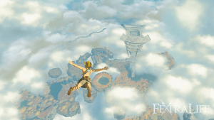
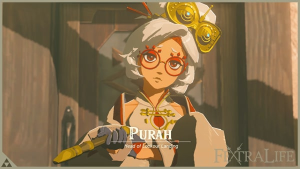

Progress Route: Index đầy đủ (Prologue → Demon King)
Index theo fextralife Game Progress Route + Walkthrough. Mỗi vùng liệt kê đầy đủ các bước; chi tiết walkthrough đang được bổ sung theo Phase B (Prologue & Great Sky Island, Central Hyrule đã chi tiết).
1. Prologue & Great Sky Island

- Nhảy vào hồ nước có lá sen. Link và Zelda khám phá tàn tích dưới Hyrule Castle; đi theo tunnel thẳng; đánh 3 con dơi (Master Sword). Zelda kiểm tra mural; vào phòng giam; gặp xác ướp (Ganondorf) → Link mất tay và Master Sword gãy; Zelda và Link bị tách. Link nhận cánh tay mới, nhặt Decayed Master Sword, phá dây leo (Y), kiểm tra shrine xanh mở cửa, nhảy xuống 2 hồ nước (nước giảm sát thương rơi), nhặt Archaic Legwear từ rương bên trái, đi về ánh sáng → đến Great Sky Island.
- Gặp Steward Construct cho gợi ý & hướng dẫn. Nhận Tree Branch, equip (D-pad + Right Stick). Thu ít nhất 3 Apples. Đánh Soldier Construct đầu tiên (Construct Horn + Zonai Charge). Lấy Wooden Stick ở gazebo/ruins. Gặp Steward Construct → nhận Purah Pad (mở map, Adventure Log). Main quest Find Princess Zelda; waypoint Temple of Time ở phía bắc.
- Đi đến Temple of Time và nói chuyện với Rauru. Chạm shrine xanh kích hoạt cầu; đi qua; Soldier Construct; thu Apple; đánh 3 Soldier Construct guarding road (time attacks, counter). Bơi qua pond; lên stone staircase; gặp Construct dạy nấu ăn (cook Skyshrooms vào lửa). Lên staircase Temple of Time; đánh Soldier Construct guarding entrance; chạm cổng → cutscene gặp Rauru: cần hồi phục sức mạnh bằng 3 shrine (Ukouh, In-isa, Gutanbac) → main quest The Closed Door.
- Rauru bảo cần hồi phục năng lực và hoàn thành các shrine. Head west, jump down; đánh Soldier Construct; lấy bow đầu tiên; nhặt Skyshrooms & Arrows. Leo stone staircase; surprise attack Soldier Construct; thu melee weapons. Bơi qua pond → stone staircase → Ukouh Shrine. Pick Rushroom.
- Hoàn thành Ukouh Shrine, nhận Ultrahand. Puzzle #1: Ultrahand nâng stone plate làm cầu. Puzzle #2: ghép 2 stone plank thành cầu dài. Puzzle #3: gondola (wooden plank + hook) trên metal pipe → hop in khi trượt. Altar → Light of Blessing.
- Đi về phía Tây, nhặt rìu đá từ gốc cây. Rauru dạy mark location bằng scope Purah Pad. Build gondola để cross metal railings. Gặp Construct dạy chop trees → Stone Axe; chop trees → logs. Tạo bridge (4 logs gắn gondola).
- Chặt cây bằng rìu tạo cầu. Floating platform điều khiển được. Cooking Pot: Construct dạy cooking; cook Skyshrooms/Apples. Outpost: 3 Soldier Construct (2 gần + 1 cung); treasure chest → Opal. West: metal railings → gondola; sail trên gondola → raft qua lake.
- Đi đến In-isa Shrine, nhận Fuse. Rauru gifts Fuse. Puzzle #1: fuse Rusty Claymore với rock boulder → phá stone blockade. Puzzle #2: hammer stone pillar → chest 5 Arrows; gather Fire Fruit; fuse Fire Fruit vào arrow bắn vines → chest drops Small Key; unlock door. Puzzle #3: Captain Construct I; ignite vines trên floor bằng Fire Fruit arrow; phá stone blockade bằng rock-infused weapon → Light of Blessing.
- Đi Đông Nam đến Pondside Cave lấy Archaic Tunic. Steward Construct cho Energy Cell + giải thích Zonai Devices. Đi southeast vào cave; đánh 2 Chuchu + 2 Soldier Construct; 2 Soldier Construct guarding cave; chest near Cooking Pot → Soldier Reaper. Pondside Cave: straightforward, Keese, Bubbul Frog → Bubbul Gem. Phá stone blockade bằng Fuse; break gem pillars (Rock Salt, Ruby, Flint, Amber). Tìm Archaic Tunic.
- Đánh Bubbulfrog đầu tiên lấy bubbul gem. (Bubbul Frog → Bubbul Gem; kill every time encountered.)
- Dùng trạm nấu ăn chuẩn bị món (ớt cay cho lạnh). Raft: 3 Log + 2 Fan; hit fan bằng melee để di chuyển; Steward Construct dạy làm lửa bằng Flint + Wood; cook. Stone staircase; Chuchus; outpost (2 Soldier Construct + 1 Captain Construct) → Opal.
- Vào hang khai thác lấy Zonai charge và Zonai Capsule. Mining Cave: Brightbloom Seeds (fuse vào arrow hoặc drop + hit melee). Break gem pillars (Zonaites). Construct near refinery dạy Zonai Charge & Crystallized Charge (để sau). Zonai Device Capsules → Fan; gắn Fan vào mining cart → proceed. Zonai Device Dispenser: x5 Soldier Construct Horn → x5 capsules.
- Đánh Like-Like và tiếp tục đến bottomless pit để đến Gutanbac Shrine. Pit Cave: x2 Spicy Pepper; cook Spicy Sauteed Peppers (Cold Resistance 2:30, x2 → 5:00). Phá stone blockade. Exit → snowy region. Ice Chuchu (shoot → explode), x2 Soldier Construct. Captain Construct I + Ice Chuchu fighting; concentrate Captain. Head inside cave. Bottomless Cave: Bubbul Frog → Bubbul Gem; x2 Bomb Flower (save for bosses); chest → Amber. Like Like (hit orangy sack in mouth → stagger) → Opal. Another Like Like → Opal + Flame Emitter capsule. Exit cave; chop trees → wooden pillar để climb (ice không leo được); ruins với Cooking Pot; enter shrine.
- Hoàn thành Gutanbac Shrine, nhận Ascend. Rauru gifts Ascend. Puzzle #1: Ascend vào ceiling (marker xanh). Puzzle #2: Ascend pillar có chest (Stone Axe); Ascend next pillar; deal Soldier Construct; destroy boxes → Ascend → Construct Bow. Puzzle #3: cut ropes freeing stone plank; Ascend underneath; time Ascend với moving platform; long pillar. Altar → Light of Blessing; teleport entrance.
- Quay về Temple of Time nhận Recall. Reach elevated section near Gutanbac entrance bằng Ascend. Inside tree → chest Archaic Warm Greaves. Wing Zonai Devices + Zonai Dispenser. Ultrahand đặt Wing trên catapult line → hop on → glide đến Temple of Time; dive vào pond. Climb temple; chạm cửa → mở, clearing The Closed Door. Touch glowing crystal → cutscene Zelda → Recall Ability. Explore inner section.
- Thử mở cửa đôi; Rauru nói chuyện lại. Dùng Recall rewind giant cogwheels → hop on → center pillar → rewind center cogwheel → next area. Bỏ qua Goddess Statue; chạm huge door → thiếu Heart Container (cần x4 Light of Blessing đổi 1 Heart Container). Rauru advise seek another shrine; fast travel về Room of Awakening.
- Rauru bảo còn shrine thứ tư. Ascend stone structure near cogwheels; rewind nearest cogwheel → hop on → cave. Discover shrine.
- Đi đến Nachoya Shrine nhận Light of Blessing. Puzzle #1: rewind raft → opposite direction → hop on. Puzzle #2: raft từ waterfalls → rewind → hop on; large gear rewind → upper platform → x10 Arrows. Puzzle #3: two clock hands → gate opens when hands contact; rewind clockwise hand → both rotate clockwise → door open. Altar → 4th Light of Blessing; teleport entrance. Crystal Refinery nearby (bỏ qua). Wing Devices → catapult → glide đến Temple of Time pond.
- Quay về Temple of Time đổi Light of Blessing lấy Heart Container. Goddess Statue → offer x4 Light of Blessing → Heart Container. Touch door → open; cutscene Rauru. Proceed quest marker; Ascend qua bridge. Cutscene Zelda guide Link to surface. Kết thúc Great Sky Island.
Mẹo: Luôn cook Spicy Sauteed Peppers trước khi vào vùng tuyết; tiết kiệm Zonai Charge; dùng Brightbloom Seeds trong hang tối; stock melee weapons (dễ gãy); dùng Ascend để shortcut.
Prologue & Great Sky Island – chi tiết hoàn tất.
2. Central Hyrule: Lookout Landing

- Đi đến Lookout Landing nói chuyện với Purah. Sau khi nhảy xuống từ Temple of Time, đi bộ theo road đến Lookout Landing (trung tâm bản đồ). Gặp Purah → báo cáo Great Sky Island; nhận Purah Pad (bản đồ, Camera, Sensor).
- Khám phá ruin rơi trong Lookout Landing (Steward Construct đổi). Ruin rơi từ sky → Steward Construct đổi crystallized charges lấy Energy Wells.
- Nói chuyện Addison (biển gỗ). Addison giữ biển gỗ → giúp dựng biển (20 Rupees, veggie rice ball, Sleepover Ticket).
- Giúp Addison (Rupees, cơm rau, vé ngủ). Hoàn thành giúp đỡ → nhận thưởng.
- Hoàn thành Kyononis Shrine (Zonaite Sword + Light of Blessing). Combat Training → Zonaite Sword + Light of Blessing.
- Đi đến Hyrule Castle báo cáo Hoz. Báo cáo Hoz → Hoz thấy Zelda biến thành ánh sáng và biến mất.
- Hoz thấy Zelda biến thành ánh sáng và biến mất. Quay Lookout Landing → Purah: Skyview Tower cần sửa; chờ và khám phá.
- Fast travel về Lookout Landing nói chuyện Purah. Purah: Skyview Tower cần sửa; chờ và khám phá.
- Purah: Skyview Tower cần sửa; chờ và khám phá. Tiếp tục khám phá Lookout Landing.
- Tiếp cận bãi có chất đỏ (gloom) trào ra hố. Red substance crawling out of hole → Daval giải thích gloom làm yếu, giảm max health.
- Nói chuyện Daval; tìm hiểu gloom. Complete Jiosin Shrine (Hasty Elixir + Light of Blessing).
- Hoàn thành Jiosin Shrine (Hasty Elixir + Light of Blessing). Complete Jiosin Shrine (Hasty Elixir + Light of Blessing).
- Dùng Ascend lên đá lớn; nhặt đá tìm Korok seeds; thu fire fruit. Dùng Ascend lên đá lớn → nhặt đá tìm Korok seeds; thu fire fruit. Suzuna cho Tough Elixir.
- Nói chuyện Suzuna (Tough Elixir). Suzuna cho Tough Elixir.
- Nhặt broadsword; side quest Bring Peace to Hyrule Field. Pick up broadsword; side quest Bring Peace to Hyrule Field.
- Đánh bại tất cả mobs (Silver Rupee). Defeat all mobs (Silver Rupee = 100 Rupees).
- Thuần hóa ngựa. Tame a horse (sneak + soothe) để di chuyển nhanh.
- Tiếp cận Purah tại base Skyview Tower (cutscene). Approach Purah at base of Skyview Tower → cutscene.
- Nhận Paraglider; main quest Crisis at Hyrule Castle. Receive Paraglider; new main quest Crisis at Hyrule Castle. Lên tower cập nhật map, test Paraglider.
- Lên Lookout Landing Skyview Tower (cập nhật map, test Paraglider). Go up Lookout Landing Skyview Tower (update map, test Paraglider).
- Nói chuyện Purah; main quest Regional Phenomena. Speak with Purah again; new main quest Regional Phenomena. Đánh dấu 4 vùng.
- Hoàn thành Yamiyo Shrine (3 bomb flowers + Light of Blessing). Complete Yamiyo Shrine (3 bomb flowers + Light of Blessing).
- Hoàn thành Ishodag Shrine (Zonai fan, opal, Light of Blessing). Complete Ishodag Shrine (Zonai fan, opal, Light of Blessing).
- Gặp Impa trên platform cạnh campfire; main quest Impa and the Geoglyphs. Meet Impa next to campfire với hot air balloon hỏng; main quest Impa and the Geoglyphs.
- Sửa Hot Air Balloon; glide over geoglyph; tìm vũng nước. Fix Hot Air Balloon; glide over geoglyph; look for puddle of water.
- Vision Zelda với King Rauru và Queen Sonia. Vision of Princess Zelda with King Rauru and Queen Sonia.
- Impa ngắt; main quest The Dragon's Tears. Impa interrupts; new main quest The Dragon's Tears.
Mẹo: Tránh Lynel/Hinox/construct lớn; nhặt nguyên liệu dọc đường; nấu món hồi máu; mang Brightbloom Seeds cho Depths. Skyview Tower là điểm fast travel.
Central Hyrule – chi tiết hoàn tất.
3. Hebra Region: The Vow of Tulin
Ảnh: walkthrough chr18 zelda tears of the kingdom wiki guide min
- Đi đến New Serenne Stable; ngủ đêm; đăng ký ngựa.
- Sinakawak Shrine: Opal + Light of Blessing.
- Đi Tây Bắc đến Lindor's Brow Skyview Tower kích hoạt.
- Lucky Clover Gazette: side quest Potential Princess Sightings (Froggy Armor Set).
- Theo waypoint Dragon's Tears (vision).
- Đi đến Forgotten Temple ở Hebra Mountains.
- Gặp Impa ngoài Mayausiy Shrine.
- Khám phá vị trí geoglyph trên floor map.
- Đi đến Makurukis Shrine; theo marker Regional Phenomena.
- Nói chuyện Meeshy (thông tin Misko's Treasure).
- Đến Flight Range; nói chuyện Kaneli.
- Đi đến Rospro Pass Skyview Tower kích hoạt.
- Tương tác Goddess Statue (đổi Light of Blessing).
- Side quest Molli the Fletcher (10x Arrow).
- Tìm Tulin trên platform; nói chuyện Teba và Saki (Tulin of Rito Village).
- Đi đến lodge 2 đống lửa (Hebra Trailhead Lodge); nói chuyện Harth.
- Theo trail đến Hebra South Summit Cave.
- Vào hang; nói chuyện Tulin; lấy lại cung bị đánh cắp.
- Đi lên đến Eye of the Storm.
- Trên platform của Ark, tiếp cận green light che nguồn bão.
- Nghe giọng nói từ ark yêu cầu remove locks và release hatch.
- Hoàn thành 5 locks; quay về main deck Wind Temple.
- Mở hatch bắt đầu boss Colgera.
- Bão tuyết tan; bầu trời Rito Village trong.
- Tulin và Link nói chuyện với Rito Warrior.
- Warrior: phải cùng nhau chiến đấu Demon King.
- Link nhận Vow of Tulin; Tulin of Rito Village hoàn thành.
- Đi đến Wind Temple; glide đến Pikida Stonegrove Skyview Tower kích hoạt.
- Tìm golden horse gần đó.
- Geoglyph → Dragon's Tear (vision).
- Đi đến Snowfield Stable; trả golden horse (Zelda's Golden Horse).
Chi tiết walkthrough sẽ bổ sung ở Phase B.
4. Eldin Region: The Vow of Yunobo
Ảnh: game progress route3 zelda totk wiki guide min
- Quay về Lookout Landing; nói chuyện Robbie và Josha (khám phá Depths).
- Nhận Brightbloom seed và 5x Arrow; main quest Camera Work in the Depths.
- Tìm Purah; bà bảo khám phá các vùng còn lại và đi Eldin tiếp.
- Proceed to chasm ngoài; hoàn thành main quest. Quay về Josha; nhận 5x Zonaite.
- Đi đến Woodland Stable. Nói chuyện Penn, Violynne, Mastro. Side quest Serenade to a Great Fairy.
- Đi đến Eldin Canyon Skyview Tower.
- Khám phá xung quanh; spot geoglyph; đáp xuống tìm Dragon's Tear.
- Đi đến Bedrock Bistro, rồi Goron City.
- Nói chuyện Yunobo (leader) → main quest Yunobo of Goron City.
- Theo họ đến YunoboCo HQ bằng cart; làm fireproof elixirs.
- Trong hang, đánh Yunobo [Clearly Not Himself].
- Đi đến Death Mountain.
- Hoàn thành Sitsum Shrine (Mighty Construct Bow + Light of Blessing).
- Đánh boss Moragia.
- Nhảy vào Death Mountain Chasm; khám phá Depths.
- Tiếp cận Mustis Lightroot (fast travel).
- Mở 5 locks trong Fire Temple.
- Đánh bại Marbled Gohma.
- Yunobo chạm stone; nói chuyện Sage of Fire; entrust stone cho Yunobo.
- Nhận Vow of Yunobo; Yunobo of Goron City hoàn thành.
- Quay về Lookout Landing Skyview Tower; nói chuyện Purah.
- Nói chuyện Josha; main quest A Mystery in the Depths (10x Giant Brightbloom Seed, 10x Arrows).
- Bay lên Eldin Canyon Skyview Tower; đi đến South Akkala Stable.
- Đi đến Ulri Mountain Skyview Tower; giúp sửa.
- Kích hoạt tower; paraglide về Upland Zorana Skyview Tower (Lanayru).
Chi tiết walkthrough sẽ bổ sung ở Phase B.
5. Lanayru Region: The Vow of Sidon
Ảnh: game progress route1 zelda totk wiki guide min
- Bay qua Lanayru Region đến Zora's Domain.
- Nói chuyện NPC → main quest The Sludge-Covered Statue.
- Rửa bùn bằng cách ném Splash Fruit vào tượng.
- Yona mời điều tra; tìm Sidon.
- Hoàn thành Mogawak Shrine (Opal + Light of Blessing).
- Tìm Sidon trên Ploymus Mountain.
- Hoàn thành The Broken Slate, Restoring the Zora Armor, Clues to the Sky.
- Tìm đảo hình cá (Floating Scales Island).
- Bắn tên qua trung tâm tear → Clues to the Sky hoàn thành.
- Đánh bại Sludge Like boss.
- Đi đến East Reservoir Lake.
- Vào Ancient Zora Waterworks.
- Kích hoạt altar → cầu thác đến sky island.
- Đi đến Wellsprings Island (nhảy vào thác; equip Zora armor).
- Đến Water Temple (Hover Stones, Hydrants, Soldier III blade).
- Điều hướng Water Temple; mở Four Faucets.
- Đánh bại Mucktorok boss.
- Sidon chạm stone; ancient Zora Warrior nói chuyện; Vow of Sidon.
- Quay về Zora's Domain.
- Sidon of the Zora hoàn thành.
- Đi đến Upland Zorana Skyview Tower; đáp geoglyph; tìm Dragon's Tear.
- Đi đến East Akkala Plains Chasm (Obsidian Frox).
- Đánh hoặc đi đến Akinatanis Lightroot (fast travel).
- Khám phá Ui-Ihcoj Lightroot; cấu trúc temple.
- Dùng Ascend; đánh Yiga blademaster.
- Tìm Konba; nhận Yiga armor + Travel Medallion Prototype.
- Đi đến Lookout Landing; Purah bảo tiếp tục điều tra.
- Đi Depths; tìm Koradat Lightroot.
- Đi Kawatik Lightroot; Great Abandoned Central Mine.
- Mở Iayusus và Nihcayam Lightroots.
- Nói chuyện Researcher và Steward Construct → Autobuild.
- Hoàn thành nhiệm vụ; Master Kohga và underlings xuất hiện.
- Đánh bại Master Kohga; nhận Huge Crystallized Charge + Schema Stone.
- Quay về Lookout Landing; nói chuyện Josha.
- Đi đến Thyphlo Ruins Skyview Tower.
- Kích hoạt tower; paraglide đến geoglyph; tìm Dragon's Tear.
Chi tiết walkthrough sẽ bổ sung ở Phase B.
6. The Master Sword
Ảnh: game progress route5 zelda totk wiki guide min
- Đi đến Eknupnup và Rikonasum Lightroot.
- Proceed to surface via Ascend trong cấu trúc temple 4 pillars.
- Đến Korok Forest; tìm Deku Tree.
- Hoàn thành Musanokir Shrine (Large Zonai Charge + Light of Blessing).
- Khám phá Deku Tree Chasm; đánh enemies; Phantom Ganon xuất hiện.
- Nói chuyện Chio; đi đến Great Deku Tree.
- Deku Tree cho biết vị trí Master Sword.
- Đi đến Lookout Landing; khám phá Emergency Shelter ngầm.
- Side quest 'Who goes there?'; khám phá Royal Passage; tìm statue → Stamina Vessel.
- Đi đến Goddess Statue trong Emergency Shelter; đổi Light of Blessing lấy Stamina Vessel (cần 2 full rings stamina).
- Đi đến In-isa Shrine; vantage point; tìm flying dragon; pin geoglyph.
- Lấy Master Sword cắm trên đầu Dragon (cutscene).
- Recovering the Hero's Sword hoàn thành.
- Đi đến Musanokir Shrine; nói chuyện Great Deku Tree.
Chi tiết walkthrough sẽ bổ sung ở Phase B.
7. Gerudo Region: The Vow of Riju
Ảnh: game progress route4 zelda totk wiki guide min
- Đi đến Makurukis Shrine; thăm Tabantha Bridge Stable.
- Đi đến Gerudo Canyon Skyview Tower.
- Paraglide đến Geoglyph; tìm Dragon's Tear.
- Tìm Gerudo Highlands Skyview Tower; đọc note trên bàn.
- Khám phá Meadela's Mantle Cave.
- Đi đến Gerudo Desert Gateway.
- Hoàn thành Mayatat Shrine (10x Arrows + Light of Blessing).
- Đi đến Kara Kara Bazaar.
- Đi đến Gerudo Town.
- Nói chuyện Riju, Chief of Gerudo → main quest Riju of Gerudo Town.
- Hoàn thành training; giúp đánh Gibdos tấn công town.
- Vào Gerudo Shelter.
- Chuẩn bị chiến đấu; giúp bảo vệ Gerudo Town.
- Phá hủy Gibdo Hives.
- Giải đố mural.
- Đánh Queen Gibdo.
- Điều hướng Lightning Temple.
- Sạc 4 Batteries.
- Đánh bại Queen Gibdo (lần 2).
- Nhặt Heart Container.
- Link nhận Vow of Riju.
- Quay về Gerudo Town.
- Riju of Gerudo Town hoàn thành.
Chi tiết walkthrough sẽ bổ sung ở Phase B.
8. The Fifth Sage: The Vow of Mineru
Ảnh: game progress route6 zelda totk wiki guide min
- Đi đến Lookout Landing; nói chuyện Purah.
- Regional Phenomena hoàn thành.
- Purah thấy Zelda ở Hyrule Castle; bảo Link giải cứu.
- Tìm Dragon's Tear ở geoglyph gần đó.
- Đi đến Hateno Ancient Tech Lab.
- Đi đến geoglyph; tìm Dragon's Tear.
- Zelda biến thành White Dragon; giữ Master Sword; Dragon's Tears hoàn thành.
- Đi đến Sahasra Slope Skyview Tower.
- Giải Makasura Shrine (Fairy Tonic + Light of Blessing).
- Nói chuyện Dorian ở Kakariko Village.
- Nói chuyện Paya, Chief of Kakariko Village.
- Quay về Lookout Landing; họp với Purah và leaders.
- Đi đến Hyrule Castle bằng paraglider (Lookout Landing Skyview Tower).
- Giọng nói gọi Link; vision Zelda dẫn vào castle.
- Tiến vào Sanctum (main entrance).
- Đánh Phantom Ganon.
- Nhặt Heart Container.
- Ganondorf xuất hiện trước Link và leaders.
- Quay về Lookout Landing; main quest Find the Fifth Sage.
- Quay về Kakariko Village.
- Nhận quest từ Tauro: Secret of the Ring Ruins.
- Hoàn thành Presenting Sensor+ quest từ Robbie ở Hateno Village.
- Đi đến Popla Foothills Skyview Tower.
- Đi đến Dracozu Lake (Nam); nói chuyện Tauro.
- Tìm chest (Charged Shirt); tìm các mảnh Charged set.
- Đi đến phần sông hình 'đuôi'; theo sông Tây Nam.
- Tìm chamber ở đuôi; dâng Zonai Charge ở altar → cutscene reveal Thunderhead Isles.
- Tìm hidden facility trong Depths của Thunderhead Isles; tìm Mineru.
- Mineru yêu cầu lắp ráp thể xác.
- Lắp ráp thể xác bằng cách thăm 4 depots.
- Sau khi lắp xong, đi đến Spirit Temple; thu hồi Mineru's Secret Stone.
- Đánh Seized Construct.
- Nhặt Heart Container.
- Mineru trao Vow of Mineru.
- Guidance from Ages Past hoàn thành.
Chi tiết walkthrough sẽ bổ sung ở Phase B.
9. Defeat the Demon King
Ảnh: game progress route4 zelda totk wiki guide min
- Quay về Lookout Landing; nói chuyện Purah về cuộc gặp Sage of Spirit.
- Main quest Destroy Ganondorf.
- Đi đến Serutabomac Shrine; đi đến Hyrule Castle B2.
- Tiếp tục sâu hơn vào castle đến chasm.
- Đánh enemies gặp phải.
- Tiến qua chasm đến Forgotten Foundation.
- Enemies phòng thủ khu vực; chuẩn bị.
- Tìm Mural nơi Link và Zelda tách; tìm đường đến Imprisoning Chamber.
- Nhảy xuống chasm; tiếp tục đến Gloom's Lair.
- Chuẩn bị cho trận cuối với Ganondorf.
- Nhảy thêm xuống chasm đến khi cutscene chơi.
- Đánh bại Demon King's Army với sự giúp đỡ của sages.
- Tiến sâu hơn vào Gloom's Lair; tiêu diệt Demon King Ganondorf.
- Destroy Ganondorf hoàn thành; Link đoàn tụ với Zelda.
Chi tiết walkthrough sẽ bổ sung ở Phase B.